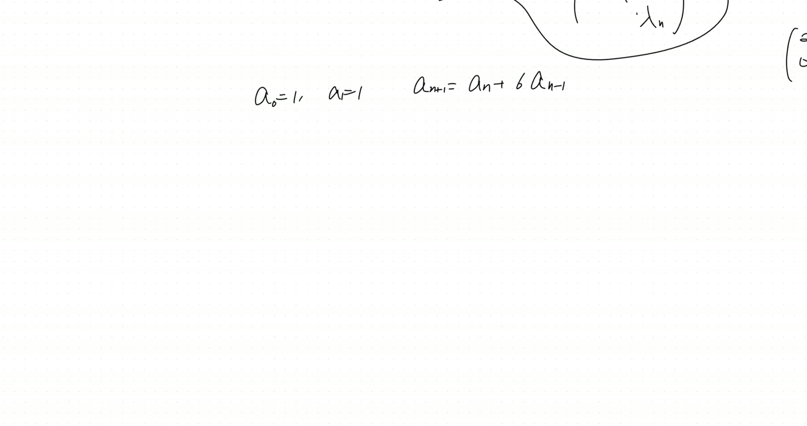
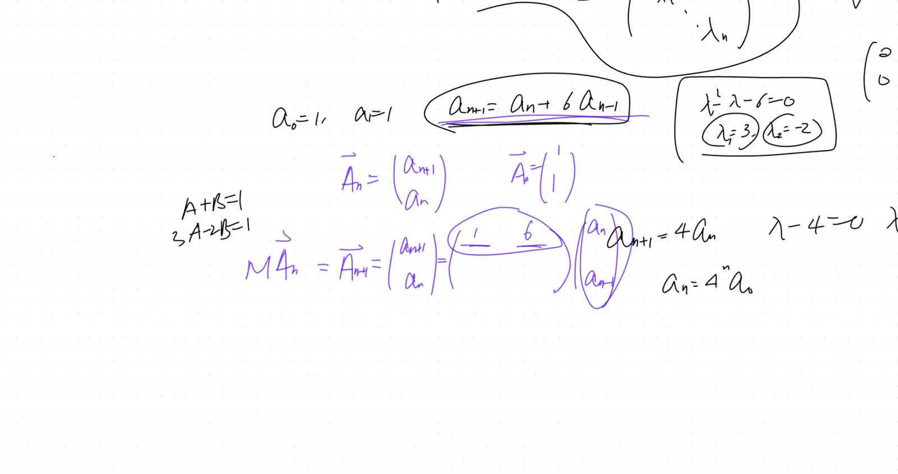
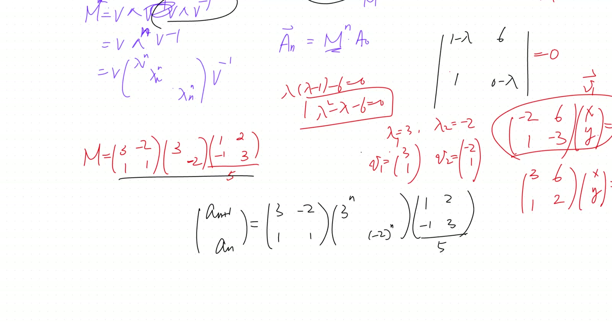
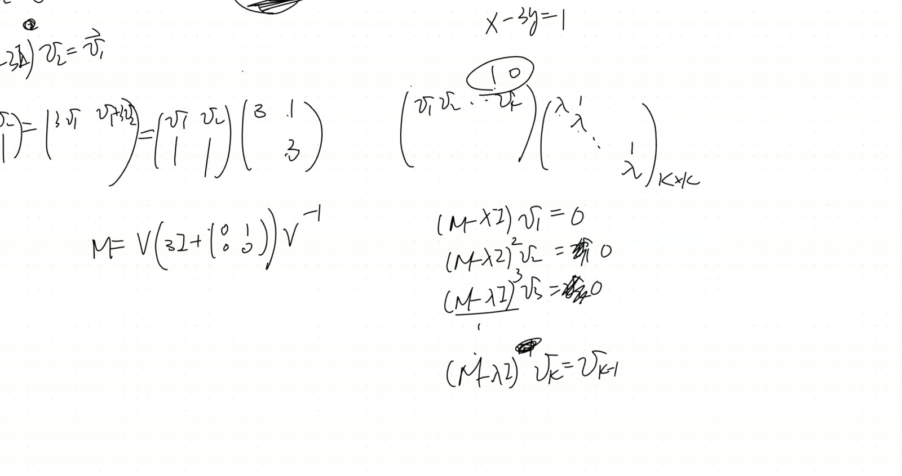

flowchart TB
A["Scalar recursion<br/>a_{n+1} = p·a_n - q·a_{n-1}"] --> B["Stack a_n = (a_{n+1}, a_n)^T"]
B --> C["Companion matrix M<br/>a_{n+1} = M·a_n · Thm 51"]
C --> D["a_n = M^n · a_0"]
E["Distinct roots λ_1 ≠ λ_2"] --> F["Diagonalise M = VΛV⁻¹<br/>M^n = VΛ^n V⁻¹ · Thm 52"]
F --> G["a_n = A·λ_1^n + B·λ_2^n"]
H["Double root (λ-λ_0)²"] --> I["Only 1 eigenvector v_1"]
I --> J["Generalised v_2:<br/>(M-λI)v_2 = v_1"]
K["Cayley-Hamilton<br/>(forward ref May 2)"] -.-> J
J --> L["M = V(λI + N)V⁻¹<br/>Jordan block · Thm 53"]
M["N nilpotent: N² = 0"] --> N["(λI+N)^n binomial truncates<br/>= λ^n I + nλ^(n-1) N · Thm 54"]
L --> N
N --> O["a_n = (A + Bn)·λ^n<br/>matches Jan 24 Thm 27"]
Linear Recursions as Matrix Recursions: Companion Matrix Diagonalization + Jordan-Block Setup for Repeated Eigenvalues
Lead
A profound reframing of linear recursions: stack \(k\) adjacent terms as a vector \(\mathbf{a}_n\) and the order-\(k\) scalar recursion becomes a first-order vector recursion \(\mathbf{a}_{n+1} = M\mathbf{a}_n\) via the companion matrix \(M\). The closed-form solution is \(\mathbf{a}_n = M^n \mathbf{a}_0\), with \(M^n = V\Lambda^n V^{-1}\) trivially when \(M\) is diagonalisable — the closed form recovers \(A\lambda_1^n + B\lambda_2^n\) for distinct roots. When the characteristic polynomial has a repeated root, \(M\) has fewer eigenvectors than eigenvalues (one short for a double root), so diagonalisation fails. The repair: find a generalised eigenvector \(\mathbf{v}_2\) with \((M - \lambda I)\mathbf{v}_2 = \mathbf{v}_1\), then \(M = V(\lambda I + N)V^{-1}\) where \(N\) is nilpotent. This is the Jordan-block form; its powers compute via binomial expansion, recovering the \((A + Bn)\lambda^n\) formula derived telescopically in 2026-01-24 morning.
Symbol dictionary
| Symbol | Meaning |
|---|---|
| \(\{a_n\}_{n\ge 0}\) | scalar sequence satisfying \(a_{n+1} = p\,a_n - q\,a_{n-1}\) |
| \(\mathbf{a}_n := \begin{pmatrix}a_{n+1}\\a_n\end{pmatrix}\) | vector of two adjacent terms |
| \(M = \begin{pmatrix}p & -q\\1 & 0\end{pmatrix}\) | companion matrix of the recursion |
| \(\lambda_1, \lambda_2\) | eigenvalues of \(M\) (roots of \(\lambda^2 - p\lambda + q\)) |
| \(\mathbf{v}_1, \mathbf{v}_2\) | eigenvectors (distinct-root case); or eigenvector + generalised eigenvector (repeated-root case) |
| \(V = [\mathbf{v}_1\;\mathbf{v}_2]\) | eigenvector matrix |
| \(N\) | nilpotent matrix: zero everywhere except one on the subdiagonal; \(N^k = 0\) for \(k\ge\text{size}\) |
| \(J = \lambda I + N\) | Jordan block with eigenvalue \(\lambda\) |
Primitive notions and assumptions
- Distinct-root recursion (Jan 10 + earlier sessions): if \(\lambda_1 \ne \lambda_2\), general solution \(a_n = A\lambda_1^n + B\lambda_2^n\).
- Double-root recursion (2026-01-24 morning, Theorem 27): general solution \(a_n = (A + Bn)\lambda^n\). Re-derived here via matrices.
- Eigenvalue/eigenvector theory (2026-02-28 followup): \((M - \lambda I)\mathbf{v} = \mathbf{0}\), \(\det(M - \lambda I) = 0\).
- Matrix-power diagonalisation: if \(M = V\Lambda V^{-1}\), then \(M^n = V\Lambda^n V^{-1}\).
Theorems
(Companion matrix reformulation). The scalar recursion \(a_{n+1} = p\,a_n - q\,a_{n-1}\) is equivalent to \[ \mathbf{a}_{n+1} \;=\; M\,\mathbf{a}_n, \qquad M = \begin{pmatrix}p & -q\\1 & 0\end{pmatrix}, \quad \mathbf{a}_n = M^n \mathbf{a}_0. \tag{51} \]
(Diagonalisable case — distinct roots). If \(\lambda_1 \ne \lambda_2\), \(M = V\Lambda V^{-1}\) and \[ M^n = V\Lambda^n V^{-1}, \tag{52} \] recovering \(a_n = A\lambda_1^n + B\lambda_2^n\).
(Jordan-block decomposition — double root). If the char poly has a double root \(\lambda\), \(M\) has only one independent eigenvector \(\mathbf{v}_1\). Choose generalised \(\mathbf{v}_2\) with \((M - \lambda I)\mathbf{v}_2 = \mathbf{v}_1\). Then with \(V = [\mathbf{v}_1\;\mathbf{v}_2]\), \[ M = V(\lambda I + N)V^{-1}, \qquad N = \begin{pmatrix}0&0\\1&0\end{pmatrix}, \quad N^2 = 0. \tag{53} \]
(Power of Jordan block). For \(2\times 2\) Jordan block with \(N^2 = 0\): \[ (\lambda I + N)^n = \lambda^n I + n\lambda^{n-1} N = \begin{pmatrix}\lambda^n & 0\\ n\lambda^{n-1} & \lambda^n\end{pmatrix}. \tag{54} \] Substituting gives \(a_n = (A + Bn)\lambda^n\), recovering Jan 24 Theorem 27.
Derivation of Theorem 51 (companion reformulation)
Define \(\mathbf{a}_n = (a_{n+1}, a_n)^T\). Compute \[ M\mathbf{a}_n = \begin{pmatrix}p & -q\\1 & 0\end{pmatrix}\begin{pmatrix}a_{n+1}\\a_n\end{pmatrix} = \begin{pmatrix}p\,a_{n+1} - q\,a_n\\a_{n+1}\end{pmatrix} = \begin{pmatrix}a_{n+2}\\a_{n+1}\end{pmatrix} = \mathbf{a}_{n+1}. \] First row uses the scalar recursion. Iterating: \(\mathbf{a}_n = M^n \mathbf{a}_0\). \(\quad\blacksquare\)
Derivation of Theorem 52 (distinct-root closed form)
\(M^n = (V\Lambda V^{-1})^n = V\Lambda^n V^{-1}\) by telescoping \(V^{-1}V = I\) in the middle. \(\quad\blacksquare\)
Derivation A of Theorem 53 (Jordan block, double root)
The eigenspace \(\ker(M - \lambda I)\) is 1-dimensional (verified directly for the worked example below). Find \(\mathbf{v}_2\) with \((M - \lambda I)\mathbf{v}_2 = \mathbf{v}_1\) — a generalised eigenvector.
Existence. By Cayley–Hamilton (forward-referenced to May 2), \(M^2 - 2\lambda M + \lambda^2 I = 0\), i.e. \((M - \lambda I)^2 = 0\). So \((M - \lambda I)\) maps everything into \(\ker(M - \lambda I) = \operatorname{span}(\mathbf{v}_1)\). Pick any \(\mathbf{v}_2 \notin \ker(M - \lambda I)\); then \((M - \lambda I)\mathbf{v}_2\) is a nonzero multiple of \(\mathbf{v}_1\). Scale \(\mathbf{v}_2\) so the multiple is 1.
Matrix form. \(M\mathbf{v}_1 = \lambda\mathbf{v}_1\) and \(M\mathbf{v}_2 = \mathbf{v}_1 + \lambda\mathbf{v}_2\) bundle as \[ M[\mathbf{v}_1\;\mathbf{v}_2] = [\mathbf{v}_1\;\mathbf{v}_2]\begin{pmatrix}\lambda & 1\\0 & \lambda\end{pmatrix} = V(\lambda I + N). \] Right-multiply by \(V^{-1}\). \(\quad\blacksquare\)
Derivation of Theorem 54 (Jordan block power)
Binomial: \((\lambda I + N)^n = \sum_k \binom{n}{k}\lambda^{n-k} N^k\). Since \(N^2 = 0\), only \(k = 0, 1\) survive: \(\lambda^n I + n\lambda^{n-1} N\). \(\quad\blacksquare\)
Recovery of \((A + Bn)\lambda^n\). \(\mathbf{a}_n = V(\lambda I + N)^n V^{-1}\mathbf{a}_0\). Reading the first component back as \(a_n\): a linear combination \(A\lambda^n + Bn\lambda^{n-1} = (A' + B'n)\lambda^n\) (absorbing \(\lambda^{-1}\) into \(B'\)). Matches Jan 24 Theorem 27. \(\quad\blacksquare\)
Worked example (transcript)
Distinct-root: \(a_{n+1} = a_n + 6 a_{n-1}\), \(a_0 = a_1 = 1\). Companion \(M = \begin{pmatrix}1&6\\1&0\end{pmatrix}\). Char poly \(\lambda^2 - \lambda - 6 = (\lambda-3)(\lambda+2)\). Eigenvalues \(3, -2\); eigenvectors \((3,1)^T, (-2,1)^T\). Closed form \(a_n = \tfrac{3}{5}\cdot 3^n + \tfrac{2}{5}\cdot(-2)^n\).
Repeated-root: \(a_{n+1} = 6a_n - 9a_{n-1}\). Companion \(M = \begin{pmatrix}6 & -9\\1 & 0\end{pmatrix}\). Char poly \((\lambda - 3)^2\). Eigenvector \(\mathbf{v}_1 = (3,1)^T\). Generalised: \((M-3I)\mathbf{v}_2 = \mathbf{v}_1\) — pick \(\mathbf{v}_2 = (1, 0)^T\). Then \(M = V(3I + N)V^{-1}\), \(a_n = (A + Bn)\cdot 3^n\).
Verification audit
- Companion for \(a_{n+1} = 4a_n - 4a_{n-1}\). \(M = \begin{pmatrix}4&-4\\1&0\end{pmatrix}\). Char poly \((\lambda-2)^2\). Eigenvector \(\mathbf{v}_1 = (2,1)^T\) from \(\begin{pmatrix}2&-4\\1&-2\end{pmatrix}\mathbf{v} = 0\). Generalised \(\mathbf{v}_2 = (1,0)^T\) from \(x - 2y = 1\). ✓
- \(N\) nilpotent. \(N^2 = \begin{pmatrix}0&0\\1&0\end{pmatrix}^2 = 0\). ✓
- Jordan power at \(n=2\). \((\lambda I + N)^2 = \lambda^2 I + 2\lambda N + N^2 = \begin{pmatrix}\lambda^2&0\\2\lambda&\lambda^2\end{pmatrix}\). Matches (54). ✓
- Matches Jan 24. For double root \(\lambda\), both telescoping and matrix-Jordan give \(a_n = (A+Bn)\lambda^n\). ✓
- Sanity at \(\lambda=0\). \(M = N\), \(M^k = 0\) for \(k \ge 2\). Eventually-zero solutions. ✓
- Dependency check. Thm 51, 52, 54: clean. Thm 53: forward-references Cayley–Hamilton. ✓ noted.
Lecture video
hosted on GitHub Release v0.6 · also viewable in Google Drive
Key frames




Dependency map
Worked Socratic exchanges
Teacher: “What’s the companion matrix?”
Toby: “\(\begin{pmatrix}1&6\\1&0\end{pmatrix}\)”
Brayden (explaining): “Multiply it out: top row gives \(a_{n+1} = a_n + 6a_{n-1}\), bottom row gives \(a_n = a_n\) — recursion automatically encoded.”
Teaching move: the stacking trick is purely notational, but it transforms an order-\(k\) scalar problem into an order-1 vector problem — opening the entire matrix-diagonalisation toolkit.
Teacher: “Double root: what fails?”
Toby: “We’d be one short in the eigenvector count.”
Teacher: “Right. Go for the second-best: \(\mathbf{v}_2\) that’s not quite an eigenvector but satisfies \((M-\lambda I)\mathbf{v}_2 = \mathbf{v}_1\). Then \(M\mathbf{v}_2 = \lambda\mathbf{v}_2 + \mathbf{v}_1\) — the eigenvalue plus a kick into the eigenspace.”
Teaching move: when the naive structure fails, find the most useful replacement that’s adjacent to it. Generalised eigenvectors behave almost like eigenvectors, with a corrective \(\mathbf{v}_1\) kick.
Exercises given
Important
Homework.
- Verify \((\lambda I + N)^n = \begin{pmatrix}\lambda^n & 0\\n\lambda^{n-1} & \lambda^n\end{pmatrix}\) via direct multiplication for \(n = 2, 3\).
- Recover \((A + Bn)\lambda^n\) explicitly from \(\mathbf{a}_n = V(\lambda I + N)^n V^{-1}\mathbf{a}_0\) for \(a_{n+1} = 6a_n - 9a_{n-1}, a_0 = a_1 = 1\).
- Generalise to \(k\)-fold roots: write \((λI + N)^n\) for a \(k \times k\) Jordan block and show \(a_n\) is a polynomial in \(n\) of degree at most \(k-1\) times \(\lambda^n\).
Fragility summary
- Weakest step. Theorem 53’s existence argument forward-references Cayley–Hamilton (May 2). Worked around for \(2 \times 2\) by direct verification.
- Imported facts. Eigenvalue framework (Feb 28); \((A + Bn)\lambda^n\) formula (Jan 24); binomial expansion.
- Geometric vs algebraic multiplicity. Lesson handles geometric-multiplicity-1, algebraic-multiplicity-2 case. Full Jordan canonical form for general matrices is much deeper.
- Numerical stability. Diagonalisation ill-conditioned for near-equal eigenvalues. Production code uses Schur decomposition.
- Confidence. Theorems 51, 52, 54: high. Theorem 53: high for \(2\times 2\); general case forward-references.
Explorative directions
- Next brick (Apr 4 afternoon): explicitly power \((\lambda I + N)^n\) using binomial expansion with nilpotent \(N\) — the \(k\times k\) Jordan block case.
- Forward (May 2): Cayley-Hamilton — the companion matrix of any polynomial \(p\) satisfies \(p(C) = 0\) as a matrix identity. Today’s companion matrix is the prototype.
- Open question: for triple roots and beyond, the Jordan block is \(k\times k\) with 1’s on the superdiagonal. The nilpotent \(N = J_k - \lambda I\) satisfies \(N^k = 0\), \(N^{k-1} \ne 0\) — the index of nilpotency equals the Jordan-block size.
- Open question (deeper): for general matrices, the Jordan canonical form $J = $ direct sum of Jordan blocks is the canonical similarity invariant. Algorithmic computation is delicate (numerical instability near degenerate eigenvalues). Replaced in practice by Schur decomposition (\(M = U T U^*\) with \(T\) upper-triangular, \(U\) unitary).
- Open question: when do two matrices commute? They share a common invariant subspace decomposition. For diagonalisable \(M\) and \(M'\): they commute iff they share eigenvectors. For non-diagonalisable: share Jordan-block decomposition with matched generalised eigenvectors. Forward-pointer to representation theory.
- Connection back to Jan 24: today’s matrix approach recovers the \((A + Bn)\lambda^n\) formula from Jan 24 (telescoping) as a matrix-power identity. Same answer, different abstraction level.
- Pedagogical thread: two-independent-routes (matrix powering vs. generating function) for the double-root recursion — both give \((A + Bn)\lambda^n\). The equivalence is the manifestation of the deeper truth: linear recursions and matrix powers are the same algebraic object.
Full transcript
NoteVerbatim transcript of the session
What happened in the morning? And I want to quickly pick up where we left off in the previous session. But as I'm getting us a whiteboard, why don't you tell me any questions you guys had? I don't believe I received the homework except for from Lucas. Could I have all of your video, please? And any questions?Please be eager to talk. Well, if nothing at all, really, just say it, tell me so, so that we'll move on. Otherwise, I keep waiting. I don't have any questions. Okay, we're.We're comfortable with how to diagonalize a matrix. The key lies in finding a set of eigenvector basis and their eigenvalues. Now, in fact, we do know if we do have a full rank of the eigenvectors, if we could use them as a basis, now then immediately problem solved. However, are all the matrices diagonalizable? Are there certain matrices where you just cannot find a full set of eigenvectors? Well, the answer is yes. There are actuallyPlenty of such matrices. Somehow, I'm actually seeing seven participants here. Oh, shoot! Hey, Lucas, I kept waiting for you, but somehow my Zoom doesn't tell me how many people are in the waiting room anymore. This room is is is behaving quite weirdly. There's so many things; those are new, and I don't know how to I don't know how to manipulate them yet. But sorry, Lucas.呃，我们没有说任何东西，除了问问题。可以看视频吗？嘿，托比，你来。如何对角化矩阵？我们已经做了。在过去的几个会议中，我们如何对角化矩阵？我们实际上发现，我们可以找到特征值。例如，M 这里是一个矩阵，它将是 n 乘 n。我们发现，在开始时，所有的特征值。假设它们是 λ 一。到到到到到到到到到dimension of the n now, meaning you have n independent eigenvectors, full rank of eigenvectors. And then, how do I end up diagonalizing the M? Please, Emma, you quickly recap for Toby.Emma，呃，we would呃呃，build the matrices of like a equals to like the
the lambda m equals to the lambda wait no wait m equals to the eigenvectors as columns, and we will multiply that by the lambdas, and then multiply that by the vector the eigenvectors as negative one. What do you mean as negative one?Say it again. To the negative first power. What does that mean? What's the meaning of v to the negative first power? Because you can't divide by matrix. The matrix, uh, inverse. Yeah, it's the inverse. So this is how we diagonalize it. Toby, uh, does it come back to you why this can be done?Does it come back to you? Uh, what's that symbol? This is a lambda matrix, Toby. If you don't reveal and you if you do not do homework, and then you're wasting class time asking me checking what is the meaning of the fundamental symbol, it's not that I'm not willing to tell you. I'm always willing to tell you, but it's a waste of time. That lambda has been our fundamental vocabulary. It's made up of the lambda one, lambda two. That's that's veryVery diagonal matrix, making up made up of all the eigenvalues. Toby, do you get prepared by going over the recording and clean up your notes and reorganize them, and doing homework? Can I request that you do so? Can you give me a promise? Okay.Okay, so are we on the same page? Before we move on to the non-diagonalizable matrix here, and I can give you a very simple matrix, which is two, one, two, zero, and this is two by two matrix. It means a linear transform. You can quickly find out what are the eigenvalues, what are the eigenvectors, and you shall find out in this case it's impossible to have a full rank of the eigenvectors. But before we even do that, I want toShow you example what this is for. Why we could actually solve for many things which don't even remotely sound like the matrices. They could be in different category. They could be they could be algebra problem, combinatorics problem, everything. But then the language of matrix is very powerful. Remember we could diagonalize it. Now let me actually bring your mind back to something we did before, which is solving second order linear recursion. So why don't I actually giveThe following, you're given a sequence a zero equal to one, a one equal to one, and we're defining a second-order recursion a n plus one just equal to, for example, twice of the a n and plus three times of the no. Let me actually go for a n plus six of the n minus one.Alright， and you guys know how to solve that. Could somebody help me quickly recover what's the general formula for the an? It's a very typical second order linear recursion. You put it all on one side， and then like use the quadratic formula.
So then you get a lambda minus three and lambda plus two. So the two eigenvalues are three and negative two. Therefore, you could say that a n minus two a n minus one. Oh, you don't need to go go back and reprove that. That's the reasoning process leading up to this formula and.That procedure. Oh, so then you would like make it into like a whole new thing. Well, we can write our final conclusion at this point. You can just give me what the an is. I want to close the formula. The an is.Lucas， what do we do from here? Once we have the two seeds, we have the two eigenvalues. I'm trying to recall what we did in the past. Lucas， what's with you in the past, today, and the last session? I feel like you're. I may be wrong. I'm totally willing to believe you, but I have the feeling that your mind is not.Quite working as hard as before, meaning usually these these questions are well within your grasp, but you are not responding. Brayden, where do we go from here?Emma，呃，Well， we have um uh three times a to the nth power and negative two times uh plus negative two times. Wait, wait, wait! A to the nth power, what is a? Um, a uh do do you want me to like find a? It's undetermined. You're saying it's we have to find what the a's are after using the initial value. IsThat what you mean? Yeah, I you're close. Apparently, you remember that, but you have remembered it not quite right. Helms, what is what is the closed formula? You know, whenever you have lost the track of something, reduce it to a reduce.particularly simple case where I don't want to deal with a two a or a second order linear recursion. Why don't we just do a first order linear recursion that equal to four a n? If that's the case, in fact, your characteristic equation is lambda minus four equals zero. There's only one eigenvalue, lambda equals four, and this is a geometric sequence. What's your general formula here? Lucas, it would be four.to to four to the n yeah four yeah four to the n then times whatever the first number is the zero so the four the eigenvalue is serving as the base of this power it's an exponential sequence with a four as a common ratio so how do we generalize it to the second order
Lucas， you continue. I remember we we did something, we did something like, uh, we have a, we have a term here, and then we found found a way to sum up all of like the a n plus one or uh down to a zero or something, and then we found a way to cancel it out. I think. Toby.Is it um three fifths three to the n plus two fifths two to the n? Uh-huh. So he actually worked out the coefficients. But before we use the initial condition to determine the coefficients, Toby is saying we're using these two eigenvalues as the two different seeds of the geometric sequences. We have some kind of a a times a three to the n and then plus a b negative two to the n. How do we determine a and b? I'm on this.This is what you had in mind, except for you misremembered them. We're not trying to decide what is a base. The base is a three and negative two. We're trying to decide the coefficients by plugging in the zero. That just means that a plus b would equal to one, and then plugging in the one, that means the three a minus the two b also equals to one, and therefore the a turns out to be three fifths and b equal to two fifths. That's well done, Toby. So that's the final conclusion. What you're getting.Adding it really like this, and three n plus one over the five, and then minus a two n plus one over the five. Ah, no, I can't do that, and with additional negative one to the n power. Oh, that's adding. Oh, if that's the case, that's what you're getting. So this is a closed formula. I'm glad you don't.Quite remember it now. Homework, please build an inventory of all the past notes here. You want to put them under different page number and different dates, and put the keywords there so that it will become electronically searchable. You could even scan little by little your past notes into the computer and tell ChatGPT to correct your notes, organize your notes, augment your notes, and make them into perfect LaTeX code so that they can save forever.You could change it, edit it in the future, and reorganize them, use them for problem solving, publish them, share them online, build your math blog, do whatever you want. But the point is, you need to put your energy and your mind into it so that you form your knowledge structure. Instead of just like them language language there, they're going to really fall into oblivion if you don't recall for a while. Did you hear what I gave you as homework?Now I'm gonna demand the submission of this monthly. So the first submission would be in a week. I want to see what is online and just your overleaf a total project. Yeah, you're building. Put all your notes in an organized, electronically searchable manner, and so that you could really ask ChatGPT to to really just expand on it, proof little details that you're not really clear about. Nowadays, I'm trying to teach my students to be able.to teach yourself without a teacher. There's plenty we're gonna do with each other. I don't want to spend time teaching you fundamentals. To be honest, if one day I can relegate all of this fundamental, the the essential teaching to ChatGPT or whatever the AI, I'm dying to do it. And then we can actually talk about nimble applications, interesting problem solving, research projects. But you want to gain that ability. Don't be deterred or slowed down by simply.
Dreading the the time spent on formatting or something, or you you don't want to spend the time perfecting your scribbles. Nowadays, AI can do it for you. But I would demand that you have very ready searchable notes. Whenever we're talking on the topic, you can immediately pull out all the past treatments I've given it. For example, harmonic oscillator, or even gravity. Later, I'm going to teach you that five times, really, using I fixed May the first time around, using the oil of the ground.the second time around, using tensor calculus. The third time around, using symmetry principles and the groups. The fourth time around, the fifth around here, I'm not even that great either. I'm learning it, which is quantum gravity. So each time your understanding would spiral up, and you would see why the new formalism includes the old one, but is more elegant, more encompassing, more generalizable of the old one. This is why I love physics. I love mathematical physics.Hey guys， do you get the point？ No。 I understand you don't。 You're young。 I'm not demanding anything。 And do the rest of you get the point？ Okay。 Well， are you going to do it？ Now， in two weeks， I'll check it。 If you fail to do it now， I'm going to make you the only person paying for the tuition of the。That session. This is my only leverage now. Failing to do anything that I requested would result in just acquiring the the fee of other kids, Toby, including you. So if you don't understand, show the recording to your parents. Talk to your dad. Talk to the the older adults about how you can study. I have nothing against you. You're a brilliant kid, but if you're not methodologically ready, then you really should wait for a couple years to start learning.Okay, and now we're going to treat it from entirely a new different point, and I would say it's more natural, and it's even more generalizable. And instead of solving for the a now, I'm going to actually solve for two numbers. Why two numbers? Adjacent two numbers as a vector, because the second order. If I trade out the second order, this one into actually the multiplicity of the of the vector now, that's dimension of the vector. Next time, if you're doing the fourth order recursion.We're gonna actually change that into four adjacent coordinates into a vector now. Why? And then becomes first order linear recursion. What do we mean? And instead of solving for that one, we're gonna actually solve for a vector of a pair of adjacent coordinates here, and I'll call that a n as a vector at the time. Then immediately, I I want to translate. In fact, I know what is a zero. a zero It just one one. We have only one initial condition.And can I write not breathing? I know you can do it, Lucas. Can you write me a new recursion for the a n plus one dependent on the previous vectors? I want to write it, which is a a n plus one of the a n. Can I write it's a linear transform of the a n of a n minus one? And you shall see, it really does become first order.meaning, I could find a matrix now operating on my an.
嗯。科比，Could you do one six one zero? Absolutely, Lucas. Can you explain why that is so? To teach us. I was still thinking. I don't see that yet. What is this? Not normal. Where is your mind?Lucas， are you actually engaged？ Yes。 Are you spending time doing the review？ Yes。 Then what has happened to your brain lately？ I'm not being sarcastic, but I'm drawing attention to the fact that your performance now is not normal. I highly suspect your mind is here.Braden， and teach us why this is so. If you like multiply it out, you get that like a n plus one is a a n plus six a n minus one. And on the bottom, you get right. So we're trying to actually find the two numbers that when you multiply them out, when you match, we're going to actually fit into that. Of course, we put one here, we put six here, but on the bottom, the a n just equal to a n, so we just put the.One here and the zero here. Does that make sense? So we're done. Why? In fact, we figure out we're ready to write our final conclusion now. If the a n it's always equal to that matrix multiplied by the a a the previous a n that's a n plus one. We already know what is a zero. Then Lucas, can you write me what is the closer formula for the a n plus one, please? Interms of the a zero， and this is called the matrix M。 You're muted。 So if we just apply it recursively, it's just the。一六一零，但到的 n 加 n，然后乘以 a 零。所以说，clearly，它是 a 零 multiplied by what？ the the 一六一零 matrix to the n？ Yeah, indeed, you raise that to the n th power. Except for according to the index I'm giving it, it would equal to the n plus first power. So we might as well just call that. So this is a n。a n would equal to the a zero times m， because every single time when you move up index by one， you're multiplying by that matrix。 So this is we're done， except for we do need to find a general formula， what is the m raised to the n power。 We know for arbitrary matrix here， this is not very easy to calculate。 Although honestly， this m is as easy as it can be。 It's only two by two， and it has zero in it。 Nevertheless， though， this comes back to the power of diagonal
我们可以power up矩阵非常容易，只要我们做什么。所以，下一步是对于计算上的简化能力。所以，我们在这里对那个矩阵M，使得我能够把它提升到矩阵的幂。我猜，试着找到，force另一个零到这个矩阵。如何force另一个零？你在哪里force它？你能看，看。Think back on what we've been working on in the past several weeks. So, what do we do here, Toby? Are you engaged? Are you even reasoning this out, Lucas?Look, I'm I'm thinking, like subtract one of the bottom row from the top row, so we get zero six one zero, and then that's easily raise raise. You can easily raise that. I don't think so. I think you're stuck on what you're already very good at. You have not been learning the new idea in the past two or three sessions at all. Brayden, what do we do? I think like diagonal.diagnose it. Beautiful. We want to diagonalize it. Did we realize that in fact, if you could m write that as v diagonal of the v inverse, what's going to happen to the m squared? When you multiply that up, the middle one cancel. It just the v diagonal squared v inverse. In fact, n the once you diagonalize it, when you raise it to the n power, the only part is to n power the diagonal matrix. That is extremely easy because when you do that, you just end up the lambda one to the n.lambda two to the end, all the way to the lambda n to the end, and then finally you're just multiplying three matrices together. In such a case, they're two by two, so that's very easy. Lucas, does it come back to you? This is what we have been working on in the past. Go ahead, say it. Yeah, I realize now. Okay, what about everybody else, Toby? You subtract six copies of the left.从右。 I mean, column. Column. You subtract six copies of the left column from the right column. Could you? Uh, well, you're also digging up zeros. We are trying to diagonalize it by finding going through this whole engine of going for the eigenvalues and work out the eigenvectors. Oh, hey guys, you know Britain has joined us for less than a.Half a year. How many months, Brandon? Maybe four or five. How long have you been? Have you joined us? Oh, I think like four months. About four months. And as opposed to Lucas, we've been working with each other on and off for three years now. I'm not criticizing you, but at the moment, I really feel like he has the best structure, the best connection in his head about what is.Working for the purpose of what? What is connected with what? There is, I can visualize that there is a knowledge tree, there is a knowledge palace in his head, and this is actually the right way to study. It doesn't matter how smart you are, how quick you are. All of you are quick enough and smart enough. But if you can't retain it by weaving an active web of knowledge now, so that in the future, if I give you something else which doesn't even remotely sound like some knowledge that.
You learned before, but you can make a connection and say, you know, wait a second, I can use that language of the diagonalization to solve this new problem. Then that means you have matured like a mathematician. You will. I'm not saying it's going to happen overnight. Overnight, but that's probably the only kind of learning that's worthwhile. The other is just a waste of time. It's a game. You learn something, you get a award, you win the contest, you get a high score, and then you.Apply for college, and eventually nothing remains in your head. It's just an educational treadmill that you get on, and I don't even know when you can get off. But the real kind of learning that can build into your mind, make you a powerful problem solver in the future, so that you can be creative, is the kind of learning that you see something and you put it connected with a concept you learned before. So very good. Let's actually do it.我们 gonna diagonalize its matrix so that it can be written in this form, and then we can power it up. Then we have the general solution. So Lucas, what is step number one of finding the eigenvalues and the eigenvectors? Take more zeros. Take some more zeros. I don't. That'sThat's exactly what I've been saying. You don't seem to have been learning anything in the past two, one or two weeks. All the new ideas fell off on the wayside. Your mind was stuck of some previous ideas. We're not doing digging out zeros anymore. We're talking about finding the eigenvalues and the eigenvectors. I know last session we dealt with the row manipulation and the column manipulation. Yes, we did that. But you should recognize it is, it's a field. It is something that beingBecause it's an important technique I taught you, but overall we're on the trajectory of finding out what are the special eigenvectors and eigenvalues of matrix. Emma, how do we? Let's actually go through the procedure of finding the eigenvalues and eigenvectors. So for eigenvalues, we will do one minus lambda times negative lambda minus six, giving.Very good. I'm saying first, we're going to actually do the determinant of this matrix, subtract the lambda from the diagonal, because what we're doing the meaning of the eigenvalue is that M operating on the vector would equal to the lambda operating on the vector. I e, when you move everything to one side, now what you're getting is actually M minus lambda I multiply operating on this v must equal to zero. And for for for us to have nontrivial solutions here,The determinant of this matrix must be zero. So we actually write the determinant of that, set it to zero, and this is going to lead to a second-order polynomial. And it's not going to surprise you; it's exactly the same polynomial as you got here. But right now we don't know that yet. In math, here we constantly feel like a diverse road they converge at a certain point, meaning every single road leads to Rome. So when we actually do that, what we're getting is the lambda.乘以 lambda 减一，a 减六等于零， which is lambda 平方的减去 lambda 减六等于零， isn't that exactly the same characteristic equation? So we're getting the two eigenvalues: the lambda equal to three and the lambda that's lambda one, lambda two equal to a negative two. Now we're ready. We have two eigenvalues. Let's go for finding the two eigenvectors. Emma, you want to continue? So we have
Then M minus the matrix minus three I, which equals to zero. So we're gonna plug in the lambda first into that one. It actually becomes a negative two six and one of the negative three. By the way, you're anticipating the this is linearly dependent. Second row is really a scaled version of the first row. Everything makes sense. I was solving that equation. Whatever the x y would give you.The first eigenvector v one， so you get three one。 Yes, very good. The v one just equal to three one. There's arbitrary normalization. You can write it six two or negative three negative one or seven point two and the uh the two point four. But you know it's convenient to write in a way that just that's easy. Okay. And what about the v two？ Um. And wait a second, Helms, could you work out what's the second eigenvector?So in the second vector, we plug in the lambda with negative two. Very good. So the matrix would be this. So, and then we do X Y equals zero. So.所以它三x加六y等于零，和然后x加二y等于零。Yes. Sorry.So it would be negative two one. Yes, very good. So you have a pair of eigenvalue, you got a pair of eigenvectors now. And Toby, now can you write our matrix M into the diagonalized form? Into the diagonalized form. Yes. Is it three negative two one one?Yes, exactly. We just write them side by side and follow the by. Also, is it just a coincidence that the top things are equal, like three and three and negative one? That's coincidence. That is actually just. Wait, shouldn't V two be with the lambda one? The no, the V two it's associated with the lambda two. But one minus.三 is negative two. Yeah, so that's the first equation. That's this is where we plug in the lambda one equal to three, and I solve the v one, which is three one. And it is purely coincident, coincidental that you actually you read off that number on the top. That's not always the case. So we're actually having, and then the three.三， and then two here. Emma. Um, and then we will want to find like the inverse. Yes. The which will be one fifth of one, two, negative one, three, and also for like the middle one, would it be negative two? Uh, the middle one. Uh, like three, negative two, three, zero, zero, negative two. Right. Uh.
However, that is positive two now because it's the negative of this negative two. This location is a cofactor of that number with additional negative, so that's positive two, and that's negative one. Uh, so for this one, it should be positive two. Oh, sorry, sorry, that's a negative two. I miscounted. This is negative two here. My bad. That's.That's the two eigenvalues, which is positive three, negative two. But the other places are worked out from the eigenvector matrix. So double check your work and see whether you agree with me. If you do, give me a signal. Very good.Good, Brethen is getting into huh, Lucas is getting. I have a question. So yeah, go ahead. So if because of we we had the diagonalize, we diagonalize this. If we square, we the sides are the same, but the middle becomes nine four nine zero zero four. Yes, it's easy to square it to raise it to the nth power to raise it to arbitrary power now. So eventually, what you have is we have a ready formula.We do know the a n, which is made up of the a of the n plus one of the a n. Although we're only interested in one of these now, would equal to the this is raised the whole thing raised to the n power, which is three negative two one and one, and followed by three to the n power, negative two to the n power, and the one two negative one three everything divided by a five, and then multiplied by this initial, which is one the one. However.I wanted to see through the final result now. However complicated these matrix multiplications are, whatever this A n simply would actually become some number multiplied by this, plus some number multiplied by that, right? So this one here it gives you a structure. You may not really have to find out what these v's are, as long as we know they exist. Well, this is a very huge confirmation of what we did before by manipulating.Remember how we proved it before? We had to write out this recursion and manipulate, or adding all the equations up, do the cancellation in between, da da da. It was quite a chore. The whole proof would run definitely a full page. But now, in your mind, if you could picture the whole structure now, and you realize eventually the two seeds of the geometric sequences show up right here. This is why we have those two two terms. All the rest are really just going to contribute to the total coefficient. I know the.These numbers are a little tedious, but if you just take the trouble to work them out, you can. We're definitely going to recover the same conclusion Toby gave us that we worked out before. Where did I write, wrote it down? Oh, well, I think I erased it. So eventually, this is the a and b. So our final answer is simply going to be the a n. I did, I did write it down somewhere. Okay, it's actually the three fifths of.the three to the n th power, and then plus the two fifths, negative or positive, just positive, of the negative two to the n th power. This is our an. That's the final answer. Now, if you just work this out, and of course, that's homework. Although honestly, there's no nutrition in this homework. I mean, you just confirm for yourself what is clear structurally. Now, now what is the case where we actually count? Is it
In any case, we simply cannot find a whole set of eigenvectors. Oh, that could happen. Let's actually look at the following recursion, and we'll see what's going to happen to it. And the result is a confirmation of another huge formula that we did before by using very smart cancellations. And so, let's actually look at the case where your a a your a n plus one actually equals to six of the a n minus nine of the a n minusThis one, and I'm giving you a zero equal to a one, a one equals to a two, for example, something like that. So, to what extent we could repeat what we did before, Toby? Well, we would do the same thing, except we have an n term. Yeah, indeed. Inside one of theEigen vectors，啊哈，他是在预测什么会发生，但我们可以证明。 meaning， let's first write in what is that matrix？啊， six， negative nine。One zero excellent. Let's find all the eigenvalues thereof. So that actually means we're taking the determinant six minus lambda negative lambda negative nine one. Ah, that's poor way to write it. And that determinant equal to zero, which would actually be the two lambda squared minus six lambda plus a nine equal to zero, right? Therefore, we actually have lambda minus three squared. Go ahead, look.I was gonna ask, is is this problematic because it's a double root? Yeah, that's exactly right. It's only problematic because the double root. So we have lambda equals three. Now the question would be, for the lambda equals three, could we possibly find still a full rank of eigenvectors? Oh, it's possible. It doesn't mean whenever you have a double root, you won't be able to find a full rank of the eigenvector. That's not true. We could have a double root and still have a full rank of the eigenvector. It's just that in this case we.对，特别嗯，Would you like um like combine the same thing? Yeah, we're gonna plug in a lot equal to three, except for there's only one choice now. So then you have the three negative nine one negative three x and y equal to zero. And then what's your eigenvector associated with that?Three one， yeah， exactly， this is three one。 Do we have any other eigenvector? No。 If and only if if you want to fit into that equation, this is the only choice. So fundamentally, we have only one degree of freedom. We have only one eigenvector. Now, what can we do? Can we still diagonalize it? No, we can't. However, how do we use it in order toTry to diagonalize it up to the point that we can. Now, let's actually look at if we can't have an eigenvector, what can we have at the very best? Well, knowing this one has a determinant of zero, and I find that this is a v one now, so that M operating on the v one equal to the three times the v one. And I'm looking for a v two which is not an eigenvector, but I wanted to satisfy the following, meaning that M squared on the v two would.
Would actually equals to the m of the m of v one, which is the three times of. In fact, what we're looking for is this. Not sorry, minus the three i that squared v two would equal to zero. My question would be: if I want to find such a v two which falls short of satisfying this, not, but still say.Exercise the second one, and we want that to be linearly independent of the first one. Go ahead and find it. And I think you might want to find out what is the square of this to begin with. This is i minus three i squared, isn't it?嗯。And v two be anything because that the square is zero. Yeah. Except for we just want our v two to be linearly independent v one. So for that purpose here, we're gonna make make them as linearly independent as possible. I want to make them also normal to each other.Because now we have the choice, why don't we? So I'm gonna actually choose my v two now, so that I actually want possibly the m operating on the v two might give me the v one, and then m operating on the v one would give me the three times of the v one. I do that for a reason. So can we solve such a v two? If I actually want to have the three negative nine and one negative three operating on the x.y， and that just gives me the three and one. We know that can be done because the first row is actually the three times the second row. You see, so there are solutions to this, and that just means.x minus the three y equals to one now, and the second equation is naturally satisfied, right? Now, why don't I just pick one zero? There are infinitely many solutions, but I pick the one zero. So, in fact, I'm actually choosing the v two equal to one zero, which is not orthogonal.No to v one, but it's actually better because it satisfies that equation. Are we good? Okay, well, if that's the case, let's see how do we write our matrix now. We know the result of the M operating on the v one and the v two would give me the three times the v one and the v one itself, right? And how do we write it as a matrix?
It really just means we actually have a v one and a v two, and I don't have a diagonal matrix anymore. What I have is actually this, would equal to a three times, but this is going to be the zero of the v two. Oh, actually, I don't quite want that. I want something which is I want this. I want the v two to be the v one and add onto the three times.是 v 二， this is what I want. Meaning, I want the minus. Oh, but that's already the minus. So what I did is fine. What I did is fine. I chose the one zero, and in fact, you can try. What's going to happen when you operate on that? This is not the v 一, it's actually three times the v 二 plus v 一. This is already the m minus the three three i. What I saw theHere is that usually M. Let me actually move that on the left now. M minus the three lambda, sorry, three i of the v two equal to the v one. And after that, if you operate again by the i minus the three i squared, of course you're getting zero, right? Because the v one satisfies that. So this is what I did. I want to choose a special v two in order for that to work out, and once零 indeed works. So to express it out and in terms of the column manipulation, that just means one of the v one plus three times the v two. Hello, do you guys follow me? Yeah, okay. And then I can again rewrite my m now in this form. M would equal to the v one. Uh, let me just write. This is a vector basis the v. And now in the middle, you don't.Really have a diagonal matrix. It's not fully diagonalized. It is actually the three I, a none plus a little zero one zero. This is called a new potent matrix here, a none v inverse. Generically, in the future, if you actually have a, you know, this is generalizable onto higher dimensions, meaning in the future, if you actually have a k root of the k multiples of the lambda, meaning your diagonal matrix with lambda.lambda lambda k of these now, but then that's our matrix after you diagonalize it. But all of these gives you only one eigenvector. They can't give you the k order of the eigenvectors. And what would what's going to happen? What do you want to do? That you find the v one so that the m minus the lambda i would give you zero. There's only one unique solution to it. However, I want the m minus lambda i of the right v.v two to equal to the v one, meaning it also means if you square it, we're gonna get zero. And at the same time, I want the m minus i times v three would equal to v two. You could always have solutions. This is guaranteed by the very fact this determinant is zero. And then, which actually means if I do three times on it, will be zero, and all the way to the last one, you could have m minus lambda i of the k.v k 减一， operating on the v k would give you the v k 减一。 And if this is what it does, oh, sorry, and I mean, there's not. Now, if it is what it does, then your matrix is not diagonalized in such a form, but rather it will be actually the lambda and lambda one. This is actually start from the v one, v two, da da da to the v k, and this is the column manipulation that expresses.
What should happen when you operated? I'm unsatisfied. Ponder this, think about it. Ask me if you fail to understand.嗯。嗯。嗯。Can I have some kind of feedback? Are you guys on the same page? We can't find the other eigenvectors. We find the second best. We want to create this cyclic set, so that each new eigenvector, when you perform your n minus lambda i on it, we're not going to get zero, but we're going to get the previous eigenvector.Can I hear some feedback? Are we on the same page? Are these ones? Yeah, they're ones. Yeah.Than the fact that actually, and each one of these is defined in such a manner, which actually means I'm operating on the v k would equal to lambda of the v k add onto the v of the k minus one. This kind of matrix here, whenever you have a a nontrivial secondary diagonal aligned with the first primary diagonal, now they're non-zero.That indicator, our matrix not diagonalizable. That means we have only one eigenvector, and have a lot of secondary eigenvectors. They're not really eigenvectors, but they have the potential to become eigenvector once you operate this n minus lambda I on it. Now, I would say, next session, I'm going to repeat this, teach you back, because this.
This is an important concept. But today, we actually I want to do a last thing: find out whether this gives us back what we had derived earlier as a general solution to those kind of second-order recursion with a double root. You're anticipating we have to have a linear appearance of n. Where does that come from? The question still boils down to what's going to happen to this matrix when you do the lambda i n plus. I label this new potent matrix as the n now, which looks like.This, the zero, zero, zero, zero, zero, and all the bottom corner is zero, and you have a a line of the one on the secondary diagonal. You with me? Okay. And what's going to happen when you have this equal to our n now? What's going to happen when you exponentiate, or not exponentiate, but rather raise this to the n power?Eventually, what we want to do is raise that whole thing to the nth power, instead of only the lambda i anymore. So we not only have a the lambda to the nth power, lambda to the nth power on the diagonal, we also have a something dependent on this. Now, of course, what you do is you do the binomial expansion, and this n can be approaching infinity, but the dimensionality that's called k. This is now theBy n， but rather k by k now. That depends on what is the order of the recursion. In our simple case, you know, it's a simple one by the second order recursion. This new potent, it's called a new potent. It's only two by two, and that's easy. You can just raise this to the n power, and that's homework. In fact, I hope you you really grapple with it before next Tuesday. But there are actually a couple of kids.We are going into another session in the meeting in only two hours, so we're going to continue investigating that. Are we good? 上了，上了。 Hey, I'm sorry. Oh, oh. Yeah, yeah. Oh, thank you for being patient with us. We're about to wrap up now, and thanks for bearing with us. So, and look at what is a power expansion of this, and see whether it confirms your. familiar formula that we derived that through some other method before. All right, take care. I'm gonna see you guys very soon. Wait, is a nilpotent matrix a matrix that when you raise it to the power, it's zero? No, well, to a high power, eventually will be zero because it has a determinant to the zero, but it won't be zero for quite a few powers, and you.need to figure out what's going to happen to this nilpotent matrix when you raise it to square, cube, etc., etc. 等等，Does this mean we have three homeworks? I didn't count, but everything is required. Whenever I give it homework, you have to do it. Okay, bye, bye, take care, bye, thank you, thank you, thank.